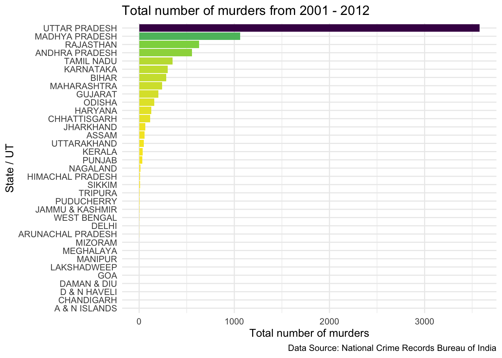
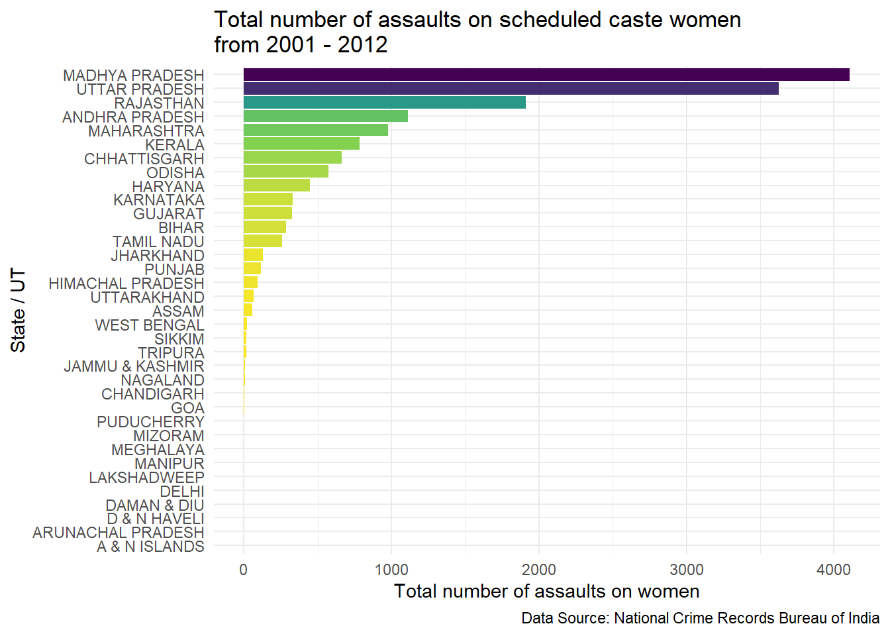
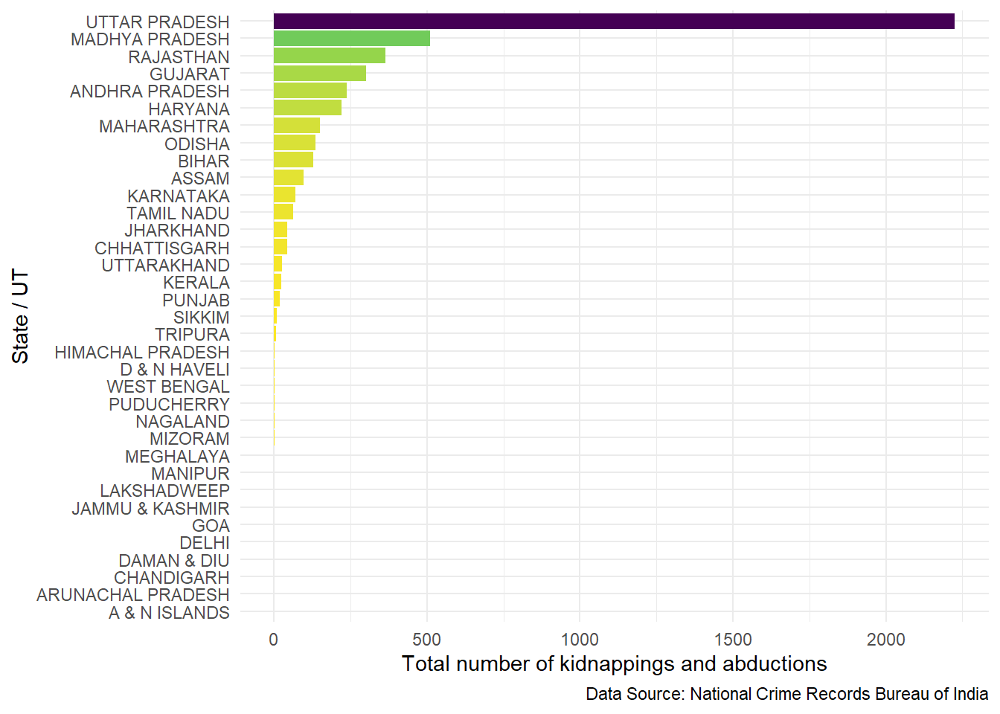
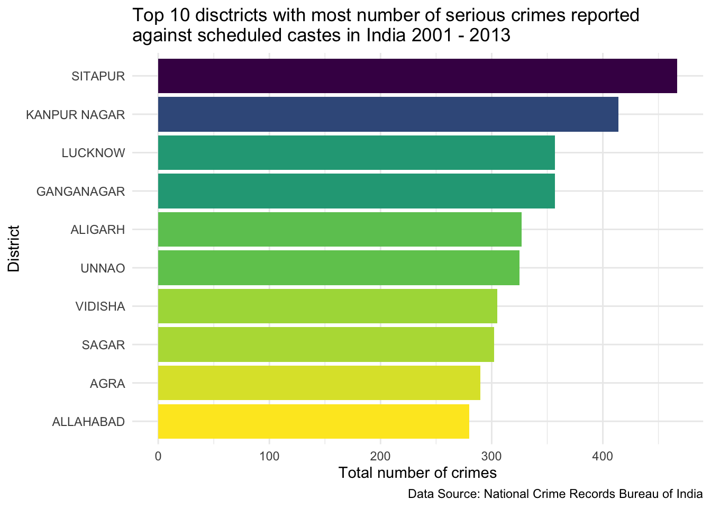

Data are picked from the National Crime Records Bureau of India. Representing the state wise and district wise crimes against scheduled castes during the years 2001 to 2012. Data for the year 2013 are available for the district wise data. Crimes that are recorded here as fields are the Indian Penal Code crimes.
Each record represents the number of each type of crime that occurred where the victim was registered as a person of a scheduled cast. Crimes are recorded regardless of the caste of the offender.



